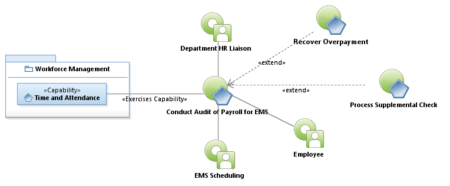
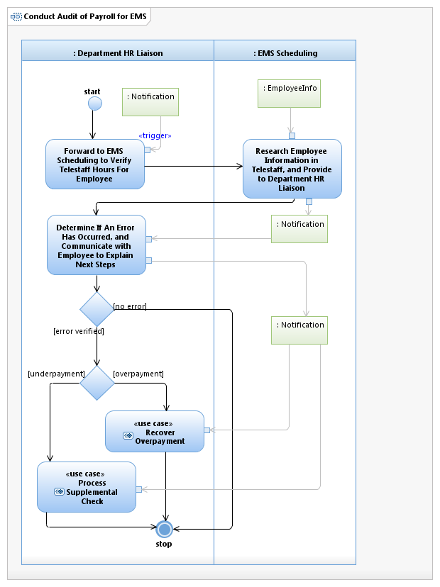

Use Case Model: Conduct Audit of Payroll for EMS
Architect: Aaron Brown, IT Enterprise Architect, Senior
Date Last Modified: 4/12/2013
User Review: JoAnn Hooks, Karen Hill, Jason Alexander, Ryan Rauschke
Date: 04/12/2013
Upon request, research the hours EMS employees have worked compared to the hours for which they were paid, and take action if there are discrepancies discovered.
Follow link to Role Definitions

Use Case Model: Conduct Audit of Payroll for EMS

Activity Model: Conduct Audit of Payroll for EMS